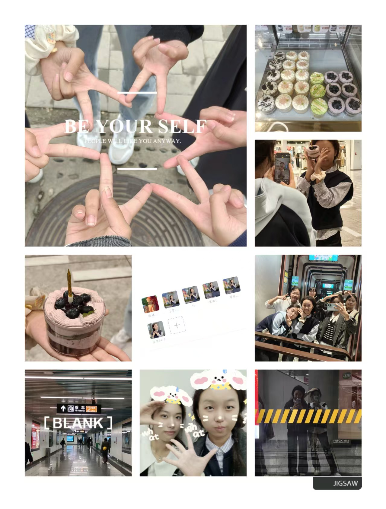

我的大学Online回忆站
关于这段时光
回忆时间线
关于这段时光
记录大学的点点滴滴，每一张照片，每一段回忆，都藏着和舍友朋友们的美好瞬间。
回忆时间线
2025-09-10
正式开学，开启军训生活，烈日下一起训练，是大学生活的起点。
2025-09-30
国庆前，和舍友们第一次火锅聚餐，热热闹闹，欢声笑语。
2025-10-16

陪舍友过生日，在商场捉迷藏，到处奔跑，充满欢乐。
2025-12-12
济南迎来初雪，和室友出门看雪，踩雪拍照，氛围感拉满。